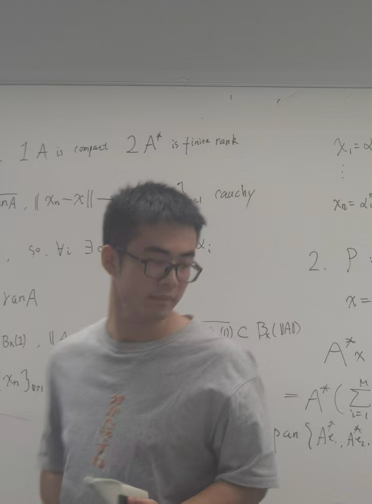

Zeyan Zhuang (庄泽琰)
|
 |
Postdoctoral Research Fellow |
About me
I am a postdoctoral research fellow in the Department of Electronic and Computer Engineering (ECE) at the Hong Kong University of Science and Technology (HKUST), hosted by Prof. Shenghui Song. I received my Ph.D. in ECE from HKUST in 2026 under his supervision. Previously, I earned my B.Eng. in intelligence science and technology from Nankai University (NKU), Tianjin, China, in 2022.
My research interests include random matrix theory, information theory, and their applications in wireless communications, signal processing, and data science.
News
- I became a postdoctoral research fellow at HKUST.